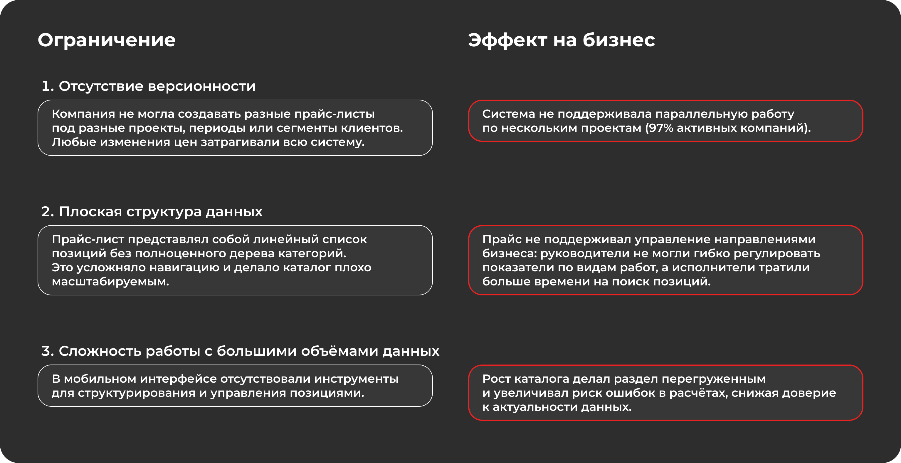
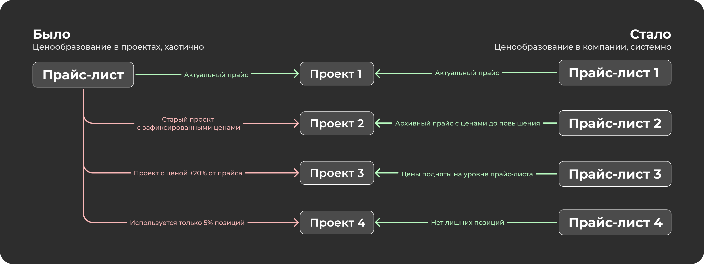
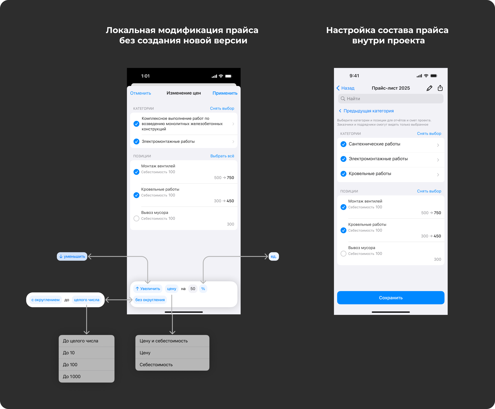
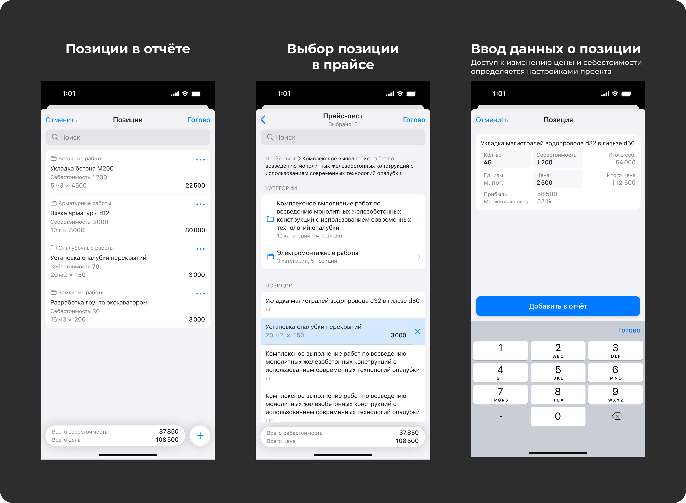

Задача
Раздел «Прайс-листы» был одним из ключевых инструментов продукта: через него подрядчики формировали отчёты, бригадиры - сметы, а руководители управляли стоимостью работ. Но один прайс на компанию плохо масштабировался на разные проекты и направления работ.

Ключевые решения
От одного прайса к системе
Вместо единственного справочника появилась поддержка нескольких прайсов внутри компании: отдельные направления, ценовые сегменты, назначение прайса на проект и дублирование структуры.
Гибкость на уровне проекта
Следующим шагом стала модель базового прайса с локальными изменениями на проекте: руководитель мог менять цены и видимость позиций без создания новых корпоративных копий.
Интеграция в рабочие процессы
Прайс-лист перестал быть самостоятельным разделом настройки и стал частью создания отчётов и смет. Пользователь выбирал позиции из назначенного прайса с учётом проектных настроек.



Проверка сценариев
После сборки ключевых сценариев я провёл серию юзабилити-тестов на действующих пользователях: руководителях проектов и исполнителях. Участники выбирали прайс в проекте, меняли цены, скрывали категории и создавали отчёты с позициями прайс-листа.
- Пользователи корректно считывали источник данных и не пытались дублировать прайсы без необходимости.
- Точки напряжения возникали вокруг момента, когда изменения становятся локальными для проекта.
- В следующих итерациях были усилены сигналы различия между базовыми и локальными данными.
Результат и вклад
Моя роль: ведущий дизайнер раздела. Я отвечал за продуктовую логику, архитектуру данных, пользовательские сценарии, прототипирование и документацию для разработки.